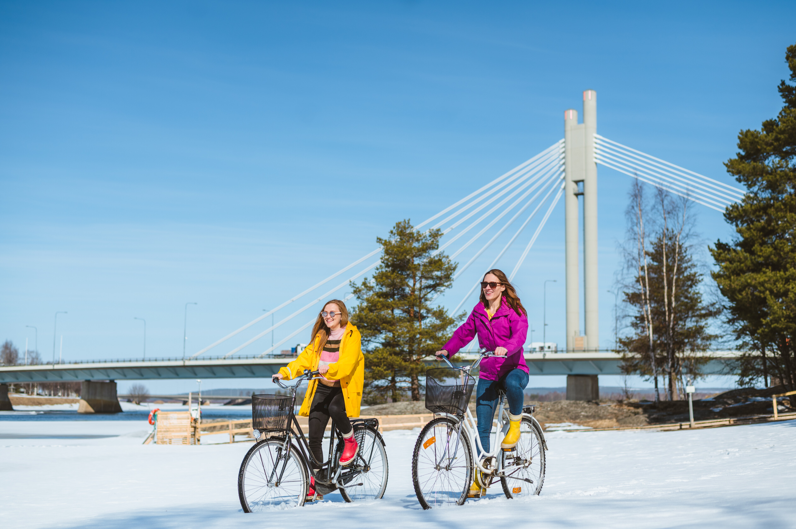
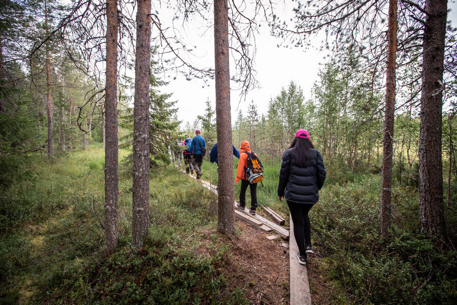
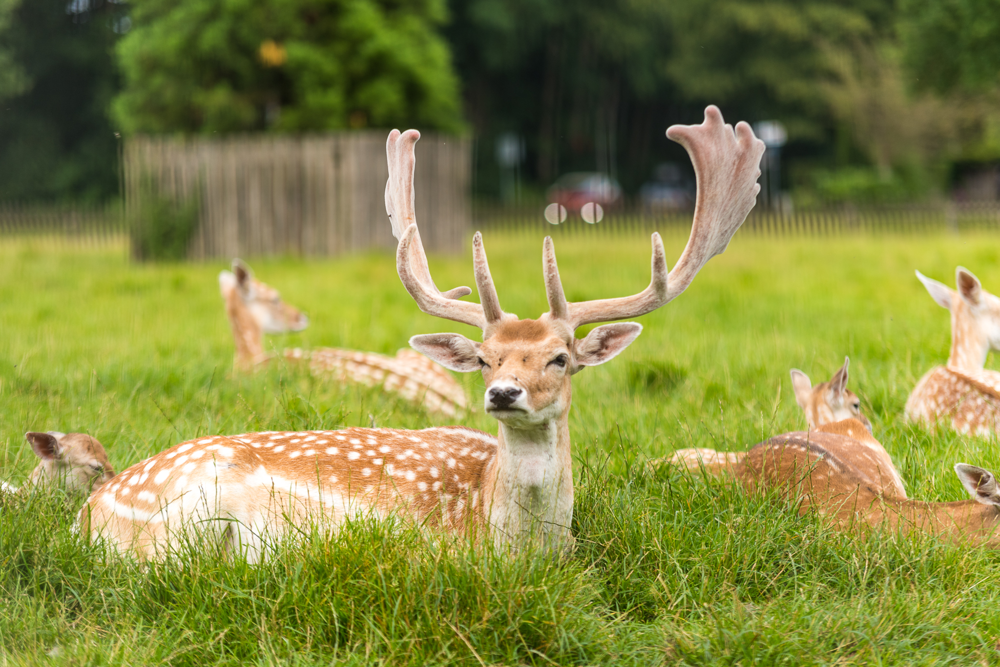

Experience the vibrant colors and refreshing atmosphere of spring.

Don’t let the frost fool you! With proper clothing and a bike, you’ll get to the best views of both cities even during the spring. Early birds sure are lucky; they’ll get to witness the mesmerizing sunrises.

Not a fan of the speed bike offers you? No worries, you can easily access wonderful trails by foot without missing out on any of the beauty. In fact, you might even have more options than the bikers regarding the nearby locations! .

We all love furry friends, right? Both of our wonderful cities offer to meet the local cuties of all shapes and sizes. Plese be awere; if you stay for too long, you might never want to leave!
Spring is a season of fresh air, longer days, and new outdoor experiences. Hover over each card to discover spring activities in both destinations.
A calm spring city with parks, cycling routes, terraces, and historic places.
A northern spring destination where snow slowly melts and daylight returns.
Spring gives both cities a fresh and peaceful atmosphere. Helmond becomes greener with parks, cycling paths, and outdoor cafés, while Rovaniemi slowly changes from snowy landscapes into bright northern spring. It is a great season for walking, exploring, and seeing how nature changes.